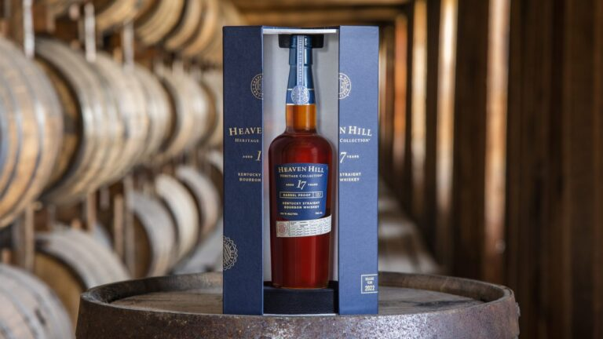

The first edition of the Heaven Hill Heritage Collection is a 17-year-old Kentucky Straight Bourbon Whiskey. Bottled straight from the barrel without chill filtering, this 118.2 proof whiskey showcases our traditional Bourbon mashbill of 78% corn, 10% rye and 12% malted barley.
A mingling of 17-, 19- and 20-year-old Bourbons, the collection uniquely shares in-depth liquid and production information on the label for added transparency. The first edition’s label highlights the percentages of various Bourbon ages, as well as which rickhouses the barrels were pulled from. Attributes on the label will vary by release.